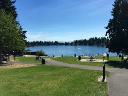
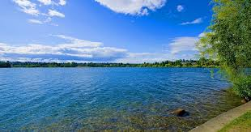
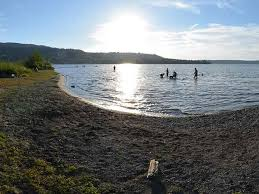
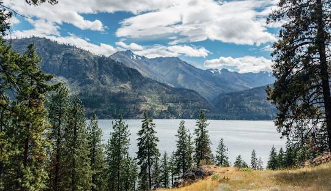

Lakes
   
Popular Lakes in Washington
Rules and regulations for Angle Lake in Washington include park rules, boating rules, and fishing rules.
Park rules
Children under 10 must be supervised by an adult
Bathing suits are required
Food, drinks, and glass containers are not allowed on the beach
Dogs are not allowed on the beach
Bikes are not allowed on the beach
Running and water fights are not allowed
Alcohol is not allowed
Swim only in the area supervised by lifeguards
Pedestrians:
Use inside lane only (closer to lake)
Travel no more than 2 people abreast
For your own safety, we suggest you walk or run facing bicyclists and skaters
Wheeled Users:
Use outside lane only (farther from lake)
Travel one way only in direction of arrows
Ride single file
Keep right except to pass
Yield to pedestrians
Speed limit 10 miles per hour
No motorized devices allowed (gas or electric-powered) except for motorized wheelchairs
All Users:
Keep dogs leashed, max. 5 feet
Move slowly through congested areas.
Shoreline regulations:
The shoreline has a 50-foot setback from the Ordinary High Water Mark (OHWM).
A portion of the setback area is reserved for native vegetation.
Exterior lighting cannot shine directly onto the water.
Exterior lighting fixtures must have light shields to minimize glare.
Boating rules:
The maximum boat speed is 8 miles per hour, unless otherwise noted in the King County code.
All vessels must have at least one personal flotation device per passenger.
Powered vessels must stay 50 feet from swimmers when the propeller is engaged.
Non-motorized craft have the right-of-way.
Park rules:
Dogs must be on a leash and under physical control.
Dogs are not allowed in designated swim areas.
Individual camping is not permitted.
All fires must be placed in a fireproof base, away from fuel tanks and vents.
Pets must be leashed and waste disposed of.
State law prohibits operating a vessel under the influence of drugs or alcohol.
Boating:
Do not operate a motorboat while an occupant is on the gunwhales, decking, or bow without using appropriate seating, guards, or railings
Do not operate a motorboat to chase or harass wildlife
Do not operate a motorboat through emergent vegetation at other than a slow/no-wake speed
Obtain a valid "Lake Chelan Federal Dock Site Permit" to use federal docks
Parks:
Moorage is limited to three consecutive nights at a given park
Moorage is first come, first served
All fires must be placed in a fireproof base, away from fuel tanks and vents
Pets must be leashed and waste disposed of
State law prohibits operating a vessel under the influence of drugs or alcohol
Beaches:
Collapsible beach umbrellas that are no wider or higher than 7 ½ feet are allowed
Baby tents up to 3 ft. high, 3 ft. wide, and 3 ft. deep are allowed
Flotation devices are not permitted on the lawns
Other rules:
Do not use profane or abusive language
Do not engage in any activity that has been deemed potentially hazardous to public safety or park property